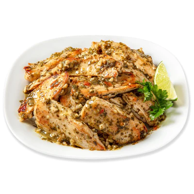

Cilantro Chicken and Steak Dinner

This meal comes from a meal-kit package, that comes with the chicken and sauce, as opposed to the BBQ
chicken meal, where everything is separate
What you'll need:
- Kevin's Cilantro Lime Chicken Meal
- Two Steak Bites (or chicken, if prefered)
- Frozen Riced Broccoli (or riced cauliflower, if prefered)
- Highly suggested spicy salt (such as Slap Yo mama Spicy), as this meal is somewhat bland out of
the package.
- Optional pico de gallo, for flavor
- Stovetop pan for heating
- Foodsafe bowls for distributing
And now for the cooking instructions:
- Grab your stovetop pan, and set the heat to medium.
- Start heating your frozen vegetables base in the microwave, according to package instructins. (While the
pan is
heating)
- After 5 minutes (about when the vegetables are done), drain the packaged chicken (it's completely cooked
already!) and place
into the hot, oiled pan.
- Optional seasoning here, then add your steak bites!
- Drop the heat to low so you don't overcook the steak!
- Grab your foodsafe bowls, and evenly split the heated vegetables.
- After 4 minutes on heat, evenly distribute the meat as well.
- Enjoy your meal, and now you also have an equal sized meal for later!
I usually make this at night, and have the second meal for lunch at work, the next day.
I love to have this one with some tortilla chips, if I have any. This meal packs a powerful punch of flavor!
Here's are the macros break down, as well!
- Total Calories: 420
- Protein: 58g
- Carbs: 12
- Fat: 14